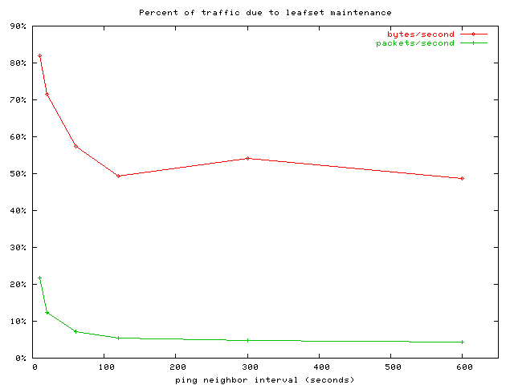
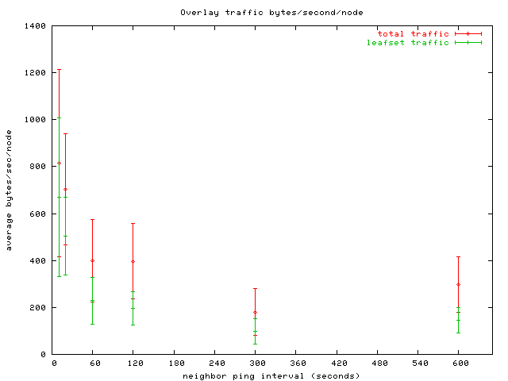
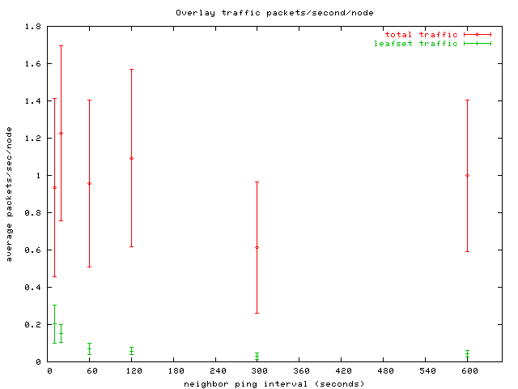

FreePastry release notes
Release 2.1, 13 March, 2009.
FreePastry is a modular, open source implementation of the Pastry p2p structured overlay network.
Contributors
Peter Druschel,
Eric Engineer ,
Romer Gil ,
Andreas Haeberlen,
Jeff Hoye,
Y. Charlie Hu ,
Sitaram Iyer ,
Andrew Ladd ,
Alan Mislove,
Animesh Nandi ,
Ansley Post,
Charlie Reis ,
Dan Sandler ,
Jim Stewart,
Atul Singh , and
RongMei Zhang
contributed to the FreePastry code. The code is based on algorithms and
protocols described in the following papers:
- A. Rowstron and P.
Druschel, Pastry: Scalable, distributed object location and routing
for large-scale peer-to-peer systems. IFIP/ACM International
Conference on Distributed Systems Platforms (Middleware), Heidelberg,
Germany, pages 329-350, November, 2001. [
pdf.zip |
ps.zip | pdf
| ps ]
- M. Castro, P. Druschel,
Y. C. Hu, A. Rowstron, Proximity neighbor selection in tree-based structured peer-to-peer overlays. Microsoft Technical Report MSR-TR-20032-52, 2003.
[
pdf.zip
| ps.zip
|pdf
|ps
]
- M. Castro, P. Druschel,
A.-M. Kermarrec and A. Rowstron, "SCRIBE: A large-scale and
decentralized application-level multicast infrastructure", IEEE
Journal on Selected Areas in Communications (JSAC) (Special issue on
Network Support for Multicast Communications). 2002, to appear. [
pdf.zip |
ps.zip | pdf
| ps
]
- A.
Rowstron and P. Druschel, "Storage management and caching in PAST, a
large-scale, persistent peer-to-peer storage utility", 18th
ACM SOSP'01, Lake Louise, Alberta, Canada, October 2001. [ pdf.zip
| ps.zip
| pdf
| ps
] (Corrected - erratum for original version: ps)
-
F. Dabek,
P. Druschel, B. Zhao, J. Kubiatowicz, and I. Stoica, "Towards a
Common API for Structured Peer-to-Peer Overlays", 2nd IPTP'03,
Berkeley, CA, February, 2003.
[ pdf
]
-
Miguel Castro, Peter Druschel, Anne-Marie Kermarrec, Animesh Nandi, Antony Rowstron and Atul Singh,
SplitStream: High-bandwidth multicast in a cooperative environment.
In Proceedings of the 19th ACM Symposium on Operating Systems Principles (SOSP'03). Lake George, New York, October 2003.
[ pdf ]
-
Andreas Haeberlen, Jeff Hoye, Alan Mislove, and Peter Druschel,
Consistent Key Mapping in Structured Overlays. Technical Report TR05-456, Department of Computer Science, Rice University, forthcoming.
[ pdf ]
Requirements
The software requires a Java runtime, version 1.5.0+. The software was
developed using Sun's SDK, version 1.5.0+
Changes since release 2.1-beta
- New Transport Layers
- SSL Transport Layer, Certificate Authority, Tutorial
- Tutorials
- Can construct applications before booting the node, which prevents message loss due to the app not being registered.
The old code looked like this:
InetAddress bootAddress; // the address to boot from (initialized elsewhere)
PastryNodeFactory factory; // initialized elsewhere
NodeHandle bootHandle = factory.getNodeHandle(bootAddress);
PastryNode node = factory.newNode(bootHandle); // boots the node
new MyApp(node); // registers the app
Now the code looks like this:
InetAddress bootAddress; // the address to boot from (initialized elsewhere)
PastryNodeFactory factory; // initialized elsewhere
PastryNode node = factory.newNode(); // does not boot the node
new MyApp(node); // registers the app
node.boot(bootAddress); // boot the node
Boot nodes constructed from the SocketPastryNodeFactory with an InetSocketAddress, or Collection<InetSocketAddress>
Boot nodes constructed from the DirectPastryNodeFactory (simulator) with a NodeHandle (as before), or Collection<NodeHandle>
New Tutorials
Changes since release 2.1alpha3
- Support for NATs w/o using UPnP
- rice.pastry.socket.nat.rendezvous.RendezvousSocketPastryNodeFactory -- Will relay traffic for NATted nodes.
- rice.pastry.socket.internet.InternetPastryNodeFactory -- Autoconfigures RendezvousSocketPastryNodeFactory
Many Bug Fixes, including:
- Fixed bug causing newNode to stall/deadlock on some versions of linux.
- Fixed a problem with replication in the PastryEndpoint.
- Can boot from a NATted node as long as it has proper port forwarding.
Changes since release 2.1alpha2
- Various bug fixes
- Fixed several long term stability problems in TransportLayer and Scribe
- Added Layer to limit sockets, to prevent FileDescriptor exhaustion
- PeerReview for Record/Replay
- Transport layer much easier to extend
Changes since release 2.1alpha
- Various bug fixes
- Simulator is a Transport Layer
Changes since release 2.0_02
Features:
- New modular transport layer:
- superior sender side notification of pending messages
- breaks up implementation in to more manageable/maintainable components
- allows for easier implementation of new features:
- security:
- flexibility:
- STUN
- simulation:
- more control of how much of the transport layer is simulated
- New implementation of Scribe:
- allows user code to implement a tree maintenance policy
- more efficient for large number of topics
Limitations:
- API may change
- memory leaks in new transport layer
- may be buggy
- not protocol-compatible with FP2.0 (will be working on a reverse compatibility layer for the full release)
- Simulator does not support new features
- No support for ProximityNeighborSelection during booting.
- Existing NAT support may be broken
Upcoming changes:
- Simulator will become a layer. This will allow simulation of the other layers in the protocol and ability to do bandwidth testing, see the effect of source routing. (For example, a Firewall or NAT layer can be added to simulate the effects of assymetric connectivity in the simulator.)
- Socket will go away. Currently all the old "socket" code is still in the codebase, but it is unused.
- PastryNode will be "final" Currently, PastryNode is extended to SocketPastryNode, DirectPastryNode (for the simulator), TLPastryNode (for the new features). The plan is to move the features of TLPastryNode into PastryNode and the DirectPastryNode into a layer, then delete all the remaining code.
- Factory interface may be deprecated:
- Currently the mechanism to boot a new node is
factory.newNode(factory.getNodeHandle()).
This has to go away because in the new system, you may need credentials as a PastryNode to communicate with other members of a ring.
The factory wouldn't have such credentials, becuase an Id will usually be associated with the credentials.
For reverse compatibility, the existing PastryNodeFactories will return a stub NodeHandle that mearly contains the InetSocketAddress.
- The new way:
factory.newNode() will return a new node, but does not cause any network traffic.
At this point, you can register applications with FreePastry. pastryNode.boot() will cause
the actual bootstrapping process.
- Proximity Neighbor Selection during boot process.
- Wireshark adapter
- ... more to come ...
Future features:
- Crypto layer
- Bandwidth-limiting layer
new calls in CommonAPI:
Note that if you want to send some messages UDP and some TCP then you should use two endponts for your application. For example:
this.tcpendpoint = node.buildEndpoint(this, "myinstance-tcp");
this.udpendpoint = node.buildEndpoint(this, "myinstance-udp");
this.udpendpoint.setSendOptions(...);
Overview of new TransportLayer interfaces:
org.mpisws.p2p.transport.TransportLayer(and Callback):
- send/receive messages
- open/accept sockets
The socket is very similar to FreePastry's AppSocket interface.
- Has notification of messages sent, and socket's opened like the commonAPI.
org.mpisws.p2p.transport.liveness.LivenessProvider:
can return the known liveness of an entity, can check liveness, and can notify about changes in liveness
org.mpisws.p2p.transport.proximity.ProximityProvider:
can return the known proximity of an entity, can notify about changes in proximity
Overview of Layers used in TranportLayerPastryNodeFactory (which SocketPastryNodeFactory now extends):
- .. CommonAPI ..
- .. FreePastry ..
- UpperIdentity used keep track of the identity of a node at an address (this is complicated,
and will have to be explained further in the future)
- CommonAPITransprotLayer serializes/deserializes messages
- PriorityTransportlayer sends messages over TCP, and utilizes MessagePriority for ordering
- SourceRouteManager selects a source-route to use based on liveness/proximity
- LivenessLayer probes a node, produces liveness/proximity
- LowerIdentity used keep track of the identity of a node at an address (this is complicated,
and will have to be explained further in the future)
- SourceRouteTransportLayer can specify a route to a host along multiple overlay nodes
- MultiInetAddressTransportLayer Used to support computers behind a NAT who may have multiple
IPaddresses due to lack of hairpinning support (similar to the EpochInetSocketAddress from 2.0, but doesn't have the epoch)
- MagicNumber verifies that the messages are for FreePastry (not secure, just throws out trash)
- Wire sends udp/tcp messages
- .. Network ..
Changes since release 2.0_01
Bug fix in routing -- When you routed to a key that fully matched the id of a node in the network, the routing table repair mechanism would throw a NPE.
Changes since release 2.0
Bug fix for consistency -- When you called endpoint.route(null,msg,target); this message would still be dropped for possible consistency violations. There is no violation for such a request because it is for a specific node. This required an update to the Binary Format for the RouteMessage (version 1). See the Protocol Specification for the specific change.
To gracefully upgrade a ring you can specify:
pastry_protocol_router_routeMsgVersion = 0
to force the routing protocol to send version 0 messags until the majority of your ring is properly upgraded. Note that both versions 0 and 1 can still be received, but only version 0 will be sent, even if it receives a version 1 message. Note that you will still be subject to the bug while using version 0.
Changes since release 2.0beta2
- Documentation:
- Diagrams -- see docs/visio/ in the source distribution
- Wireshark dissector. Thanks to David Dugoujon -- see tools/wireshark/ in the source distribution.
Note: the FreePastry wireshark dissector is licensed under the GPL, not FreePastry's BSD-like license
- Protocol Specification -- see docs/ProtocolSpec.txt in the source distribution
- Minor bug fixes.
Changes since release 2.0beta
- Depends on Java 1.5 to use new features
- Numerous Bug Fixes, Performance Optimizations, Documentation improvements.
- Tap interface for simulator: see SimulatorListener
- Routing Consistency works much better
- Lots of evaluation on PlanetLab
- Note:The PeriodicLeafSetProtocol is very low bandwidth and provides routing consistency in almost all situations other than network partitions. However, the accuracy of the LeafSet is most accurate near the center. This is because leafset changes are gossiped. With the default setup, changes to the leafset may take over 4 minutes to propagate to all nodes. However, your nearest neighbor to the left and right are guaranteed to be accurate.
- Note:The node may go ready and not ready depending on lease validity. Not ready means that the node will not accept routing messages. This is necessary to guarantee routing consistency. To find out if you are ready, you can call PastryNode.isReady(), or register yourself as an Observer of the PastryNode. You can expect a value of true when the node goes ready, and a value of false when it goes not-ready.
- Better support of NATs:
- Integration of optional UPnP provider: SBBI's UPNPLib
- EpochInetSocketAddress supports a list of IP addresses to work properly with NATs that don't support hairpinning.
- FreePastry will scan the working directory for user.params to override the freepastry.params file in the jar
Changes since release 1.4.4
- Elimination of Java Serialization. Is reverse compatible with the code of previous version, but the protocol is not reverse compatible. Your application needs to implement rice.p2p.commonapi.rawserialization.RawMessage to gain the benefits of non-java serialization.
- See docs/ProtocolSpec.txt for the definition of the protocol. Now FP can be ported to other languages...
- Application level sockets. Applications can now use their own socket which will be properly source-routed. This allows applications to handle their own end-to-end communication for large messages and flow control. See rice.tutorial.appsocket for an example of how to use this feature.
- Application and Endpoint can be registered later to remove implicit registration that caused synchronization bugs during startup. In other words, Node.registerApplication() was replaced with buildEndpoint() and you must call Endpoint.register() after you application has initialized its member variables.
- Various other improvements.
Limitations of the beta.
- Needs profiling.
- Protocol may still change slightly.
- No documentation or tutorial for how to use Raw Serialization or Application level Sockets.
Changes since release 1.4.3_02
- Numerous bug fixes.
- Added GT-ITM topology model. See rice.pastry.dist.GenericNetwork. It takes a file name which is the NxN array of proximities, tab or space delimited.
- Made liveness checks work via random exponential backoff.
- Can specify (max is leafset size) the number of Source Routes to use. 24 is probably too many and can lead to congestion collapse. pastry_socket_srm_num_source_route_attempts is the parameter to set. Default is 8.
- Endpoint.range() now throws a RuntimeException (RangeCannotBeDeterminedException) if it doesn't have enough information to produce the requested range.
- This is expected to be the last release that uses Java Serialization as the message format.
Changes since release 1.4.3_01
This release is fixes some bugs with the direct simulator.
- Fixed Environment Constructor in DirectPastryRegrTest and DirectPastryPingTest to use the proper TimeSource for the Direct Simulator.
Changes since release 1.4.3
This release is fixes some bugs with the direct simulator.
- Proximity NPE -- Fixed a bug that was throwing a null pointer exception in DirectNodeHandle.proximity() if DirectPastryNode.receiveMessage() was called outside of MessageDelivery. This was based on a hack to make it so that proximity() worked again, which had been broken for some time. But the hack was not pervasive enough. It should be fine now.
- SplitStream and Scribe are now Destructable -- Necessary so that when you kill a node in the simulator, these apps give up their observer status on node handles, because they are now dead. This was causing hashtable exceptions.
- Fixed Environment Constructor in HelloWorld to use the proper TimeSource for the Direct Simulator.
- Verified that nodes can be killed then re-joined with the same NodeId
Changes since release 1.4.2
This release is primarily performance enhancements and bug fixes.
- Faster logging -- Made FreePastry faster by hiding log
operations behind conditionals. This prevents a lot of unnecessary
string garbage from being created when logging is partially or totally
turned off.
if (logger.level <= Logger.WARNING) logger.log("WARNING: There is a problem");
- Memory leak -- Fixed a memory leak in the transport layer
which caused performance problems by forcing frequent garbage collection. There were 2 WeakHashMaps that didn't always agree, and this was causing lots of objects to move into the tenured status in the generational garbage collector. Also fixed some some long term memory leaks in the transport layer that would have come up if a system was running for a long time in a network with churn.
- Increased the default number of allowed
pastry_socket_scm_max_open_sockets sockets from 40 to
300. This option limits the number of outgoing sockets that
Pastry maintains. The main reason to limit this value is to avoid
running out of file descriptors. The old value of 40 was causing
thrashing in networks larger than 40 nodes. A typical pastry node
might be expected to use about 80 sockets: 24 for a leafset, 16 for
the first row of the routing table, and some number of active
connections to other nodes. However, when a pastry node attempts to
open more sockets and is limited there can be a performance problem
which is why we set the default so high. If your system runs out of
sockets while running pastry try unlimiting the number of file
descriptors in the operating system. In Unix-alikes this is often via
the shell command "ulimit -n". If this still does not help, or you
are unable to unlimit file descriptors, or you
need to run many pastry nodes on a single computer, you may need to reduce
pastry_socket_scm_max_open_sockets. Note that this option is
merely a soft limit which may be temporarily exceeded when sockets are
opened to the local pastry node from another node.
- Fixed direct simulator --
Added a concept of time to the simulator, and fixed the destroy() method to function properly. ScribeRegrTest and SplitStreamRegr test now work with both "direct" and "socket".
- Temporary fix for "large ring" bug in Past replication.
If a ring grows too quickly or two partitioned rings join replication
can mistakenly discard data that the local node is no longer
responsible for but no other node has yet replicated. The temporary
fix is to do a lookup/insert before deleting a key the local node is no longer responsible for. Admittedly this doesn't scale, so we are working on a new solution perhaps using bloom-filters or hash trees.
- Proximity Neighbor Selection -- Fixed issue with PNS not building up routing tables during join.
The getAddress() was not being called at one place in the StandardJoinProtocol so nodes were not updating their routing tables when the JoinRequest was routed through their node.
- Dropped JoinRequest on rapid rejoin problem --
There was a problem with nodes not being able quickly to rejoin if they used the same NodeId. Didn't find the cause of this bug, but can no longer reproduce.
Changes since release 1.4.1
Aside from various bug fixes, this version includes rice.environment which allows for node virtualization within the same JVM.
FreePastry and it's p2p applilcations all use the new features.
the Environment provides the following:
- Logging &mdash We have standardize on a logging system throughout FreePastry. This is a simpler
logging framework than the one that ships with java, however it is compatable. (In other words, you can implement
our LogManager and Logger with the Java one.) This logging replaces the previous "-verbose" etc. logging.
- Parameters &mdash Formerly hard-coded (
public static final) parameters are now able to be specified at startup, or even changed during runtime
rather than requiring a re-compile. It allows parameters to be changed from code, and to be persistent.
In other words, you could have a gui that lets you change the parameters, then store them to disk (By calling Parameters.store()), so next time the
code is run, it retains the parameters.
- SelectorManager &mdash You can control which nodes use which SelectorManager. The SelectorManager is a single
thread that handles all network IO and Timer events. This model usually gives improved performance, and simpler
synchronization than several threads.
- Processor &mdash It is important that tasks done on the SelectorThread don't take long, as this is the network IO thread, and can cause other nodes to suspect you are faulty. However, sometimes you need to do a CPU intensive task (like calculate a manifest for a bloom filter) that will cause problems if done on the SelectorThread. For these tasks, you can use the "Processor. This is simply a different thread that will be context switched automatically by the system. Typically, you will access this by using the Node.process() or Endpoint.process() function call. These calls result in a call to the Processor. Future implementations could use more Threads for computers with several processors, or hyper-threading.
- TimeSource &mdash FreePastry and its apps now call TimeSource.currentTimeMillis() rather than
System.currentTimeMillis(). This will (for example) allow
you to run a FreePastry node on a clock that is offset from your computers clock. This can be particularly helpful in a situation like Planetlab
where some nodes have incorrect system clocks due to misconfigured NTP servers.
- RandomSource &mdash Has the same interface as java.util.Random, but Allows for easier reproducability of some errors. You can seed the RandomSource with the same parameter so you can reproduce conditions.
How to use parameters:
The Parameters interface contains:
- A getter and setter for the java primitive types, as well as String, String[], InetAddress, InetSocketAddress, and InetSocketAddressAddress[]. For example
pubilc int getInt(String paramName). Calling the wrong type of getter will result in a RuntimeException, such as NumberFormatException. Calling the getter for an entry that doesn't exist will result in a RuntimeException.
boolean contains(String paramName) &mdash can check to see if a param exists before calling the getter which will result in an exceptin if it doesn't exist.void remove(String paramName) &mdash removes a param.void store() throws IOException &mdash stores the differences from the defaults to media (such as disk).
Default implementation:
When you construct the environment (new Environment()) it will use rice.environment.params.simple.SimpleParameters to manage parameters. The Environment constructor with no parameters will look for a file called freepastry.params in the classpath. This file is the default file, and is immutable, thus calling the store() method on the Parameters object will do nothing. The format for freepastry.params is explained here.
If you want to specify a file to save dynamic user parameters, or to override the default freepastry parameters, you can specify a single String fileName in the Environment constructor.
To override the default params filename, or to use a chain of defaults (for example epost uses a secondary default file to override and add to freepastry's defaults), specify a String[] of the defaults in order (for example freepastry, then epost), then specify a String for the dynamic user settings.
How to use logging:
You can access the environment from the rice.p2p.commonapi.Node interface. A programatic call to the Logger would typically look like:
Node n;
n.getEnvironment().getLogManager().getLogger(MyClass.class, instance).log(Logger.WARNING, "This is a warning");
n.getEnvironment().getLogManager().getLogger(MyClass.class, instance).logException(Logger.WARNING, "This is an exception", new Exception());
Of course you can use helper methods to reduce typing.
The available log levels can be found in the rice.environment.logging.Logger interface, but the match java's log Levels.
By default the logging will go to System.out (standard output). To make the logging go elsewhere, construct the environment with a SimpleLogManager that is constructed with a PrintStream that you want (such as System.err, or a File).
The following parameters affect logging:
- loglevel &mdash specifies the default log level. Can be an integer level, or any of the defined names.
(defaults to WARNING in freepastry.params)
- (package.or.full.class.name)[:instance]_loglevel — specifies log levels on specific packages or classes.
So, for example, to turn on ALL logging for the scribe package add a parameter to the params file such as:
rice.p2p.scribe_loglevel = ALL
to do this for a particular scribe instance do:
rice.p2p.scribe:myinstance_loglevel = ALL
and for a specific class:
rice.pastry.socket.SocketChannelWriter_loglevel = ALL
- pastry_factory_multipleNodes &mdash if true, prepends each logged line with the nodeId. This is useful when you have multiple nodes in the same JVM, but want to be able to distinguish which nodes is logging what.
Logging to file (used when you have multiple nodes in the same JVM, and want logging to go to separate files, with a name that is based on the node's id):
- environment_logToFile &mdash if true, used in conjunction with pastry_factory_multipleNodes, logs each node to its own file, logging not related to a node goes to Stdout by default (usually stdout).
- fileLogManager_filePrefix &mdash allows you to specify the prefix of these files
- fileLogManager_fileSuffix &mdash allows you to specify the suffix of these files, default is ".log"
Other notes on the Environment:
- The main constructor takes in all 6 services that the environment provides. Any fields that are null will be given an appropriate default value. However, the Parameters field must be non-null to use this constructor.
- The default implementation of each service, except for the SelectorManager, can be found in subpackages of rice.environment. They are named "simple" for each type of service. (For example rice.environment.params.simple.SimpleParameters implements rice.enviornment.params.Parameters.)
Other changes:
- Created non-blocking, continuation based versions of getNodeHandle(), getLeafSet() etc. in the factories.
Changes since release 1.4
Version 1.4.1 introduces the ConsistentJoinProtocol and some changes to the PeriodicLeafSetProtocol. These improvements provide stronger guarantees regarding routing consistency.
What is consistency?
Routing is consistent if no overlay node ever delivers a lookup message when it is not the current root node for the message's destination key. -- Microsoft Technical Report MSR-TR-2003-94
Wasn't FreePastry always consistent? What could have caused routing inconsistencies in previous versions?
Routing could be inconsistent in FreePastry if at some point there existed two adjacent nodes that are both active and do not know of each other, thus believing that they are responsible for some of the same keyspace. This could temporarily happen during concurrent joins, or if a node incorrectly determined its direct neighbor to be faulty, and therefore took over that section of the keyspace. The result of an inconsistency is that routing to a key (for example a DHT put/get) could cause the message to be delivered to different nodes, depending on the origin of the message. Thus you may do a PUT but then a subsequent GET still retrieves the old value!
How does FreePastry prevent routing inconsistency?
Our consistent join protocol is similar to that described in Microsoft Technical Report MSR-TR-2003-94, except that it does not require that all nodes are reachable from any other node at all times. The idea is that when a node joins, before it accepts messages, it must first contact its entire leafset and either receive a reply from each member or determine them faulty. This causes concurrent joiners to be aware of each other before both can become active. We rely on dynamic source routing introduced in FreePastry Version 1.4 to ensure that a node is considered alive as long as it is reachable by one of its leafset members.
The new protocol also dramatically reduces the overhead of leafset maintenance. By default the system is configured to send and receive a message from each neighbor every 20 seconds, and if it takes more than 30 seconds to hear from a neighbor, then a checkLiveness() starts. This ensures that a portion of ringspace never remains unclaimed for longer than 50 seconds (20 seconds between pings, then 30 seconds to wait for replies) after the death of a node.
We ran tests on PlanetLab to characterize the overhead of leafset maintence at various neighbor ping intervals.
All of the data for the following graphs were collected on a ring running with no application and induced churn to give an average node lifetime of 60 minutes.

This graph represents the fraction of traffic that is due to leafset maintenance. One hundred percent would mean that all overlay traffic was due to leafset maintence. Leafset maintenance amounts to a modest 12.4% of traffic in packets even at a fairly aggressive neighbor ping rate of once every 20 seconds (the default). We expect the overhead as measured in bytes to go down in a future release of FreePastry that uses a binary wire protocol rather than java serialization.

This graph shows the average traffic due to leafset maintenance in bytes per second (smaller numbers are better). The error bars are at one standard deviation among the nodes in the overlay. At a 20 second neighbor ping interval leafset maintenance traffic is 71.5% of overlay traffic (top graph) but as this graph shows, that amounts to a data rate of only 500 bytes/second.

This graph shows the average traffic due to leafset maintenance in packets per second (smaller numbers are better). The error bars are at one standard deviation among the nodes in the overlay. At a 20 second neighbor ping interval, leafset maintence requires about 0.15 packets per second, or about 10 packets per minute.
Applications can trade off between the amount of maintence overhead they are willing to tolerate and the length of time they are willing to allow ringspace to be unclaimed by adjusting the neighbor ping interval.
New behavior:
- When using the
rice.pastry.standard.ConsistentJoinProtocol (which is now the default for the SocketPastryNodeFactory) PastryNode.setReady() will not be called until the node receives a ConsistentJoinMsg message from every node in its leafset.
- Messages will not be delivered to a PastryAppl until the PastryNode.isReady() returns true. The same behavior occurs for applications built on the commonAPI because PastryEndpoint extends PastryAppl. This change occurred in the rice.pastry.messaging.MessageDispatch
- Important: If the Pastry selector takes more than 20 seconds (the time it takes rice.pastry.socket to find a node faulty) to select, then it is possible that other nodes will have found the node faulty.
This can occur for 2 reasons:
- A system standby or other type of process pause occurs.
- Application level code is taking too long to process messages.
To prevent inconsistet routing in this case, the ConsistentJoinProtocol will call PastryNode.setReady(false). This will cause your applications to stop receiving messages until the ConsistentJoinProtocol "rejoins" and calls PastryNode.setReady(true) again. By default, your application will not receive any notification of these events! If you wish to hear about such events then register yourself with the PastryNode as an Observer. You will receive a Boolean(true) when the node becomes ready, and a Boolean(false) when not-ready. Note that to keep reverse compatibility with your applications, PastryAppl.notifyReady() will still be called only the first time a node becomes active.
- In the current version of FreePastry, complete network partitions may lead to routing inconsistency. If a small group of machines loses connectivity to the rest of the overlay, they may detect all other nodes to be faulty and begin accepting messages for larger and larger portions of the key space. The FreePastry team is currently investigating a approaches to deal with such partitions, and we expect a solution in a forthcoming release.
Testing:
We have done extensive routing consistency testing on Planetlab. The only times we find routing inconsistencies is during a network partition (usually the loss of a subnet). Routing in this case is only inconsistent across the partitions.
Changes since release 1.3.2
- Supports ePOST, which is now in production use.[Download]
- Single threaded:
We have adapted a single threaded model to improve performance. Calls into Pastry are still properly synchronized. In fact if you run multiple nodes within the same JVM they will execute on the same thread. The scheduler is implemented in rice.selector.
- Transport Layer/Routing:
- Removed rice.pastry.RMI, rice.pastry.Wire -- Use rice.pastry.Socket
- Simplified transport layer. The Socket transport layer uses TCP for all messaging except liveness.
- Improved liveness checking, better support for churn. The Socket transport layer uses UDP only for liveness checks, and they are sent using random exponential backoff.
- Improved support for PlanetLab and the Internet. Gracefully handles temporary and permanent routing anomalies by using sourceroutes. The sourceroutes are selected from nodes within the leafset.
- Improved routing performance. Aggressive routing around nodes that may have stalled. We now use per hop acks to rapidly route around stalled or congested nodes.
- Support for a fixed file descriptor limit on sockets. This is used for nodes that need to fix the maximum number of concurrently opened sockets. Typically this is used if you don't have sufficient privilege to raise the maximum number of open file descriptors for a process. (See ulimit -n).
- Support for fine grained prioritization of message delivery. We added
int getPriority() to the message interface. The transport will prioritize higher priority messages over low priority.
- Support for multiple bootstrap nodes. The socket transport layer can take a list of IP addresses to try to boot off of. It will attempt to connect to them in random order and return the first one it is able to connect to. (See
DistPastryNodeFactory.getNodeHandle(InetSocketAddress[]))
- Support for NodeId reuse. Previous versions randomized the last 32 bits of a NodeId. The new version uses an epoch to determine if a node has rebooted since you last talked to it.
- Modules:
- p2p.commonapi -- Added priority to messages.
- p2p.past -- Added lease-based past version in p2p.past.gc - extends the PAST interface.
- p2p.scribe -- Minor changes.
- p2p.replication -- This has been modified to use bloom filters instead of key lists for replication.
- p2p.splitstream -- Minor scalability improvements based on planetlab deployment.
- (NEW) p2p.util -- Various utilities for p2p packages, including Cryptography and XML.
- (NEW) p2p.multiring -- An implementation of the IPTPS paper, complete with optional RingCertificates.
- (NEW) p2p.aggregation -- Improves DHT efficiency by aggregating small objects
- Aggregation: This module can increase the efficiency of a DHT by bundling several small
objects into a larger aggregate. It is used by Glacier, but can also be
combined with other DHTs such as PAST.
- (NEW) p2p.glacier -- Protects against data loss during large-scale correlated failures
- Glacier: Distributed storage systems can suffer data loss when a large fraction
of the storage nodes fail simultaneously, e.g. during a worm attack.
Glacier protects against this by spreading redundant data fragments
throughout the system. It can reconstruct the data with high probability
even after disastrous failures that may affect 60% of the nodes or more.
Please see our NSDI paper on Glacier for a more detailed description.
- persistence -- Many improvements and bug fixes. Basically the same interface. Should be now *MUCH* more robust. Also added metadata support to the rice.persistence package classes.
- (NEW) selector -- Allows pastry to run on a single thread.
Changes since release 1.3.1
- Overhaul of the wire package. The new version is higher
performance and has eliminated some known synchronization issues that
can cause deadlock. Furthermore the package produces the more sensible
NodeIsDeadException if a message is attempted to be sent after the node
has simulated being killed. Killing of nodes remains for testing, and is not supported on all platforms.
- New version of Replication Manager in rice.p2p.replication.
Based on commonapi instead of pastry. There is an alternate/simpler
interface to rm in the rice.p2p.replication.manager package.
- Past has been migrated to the new rm (p2p.replication).
Changes since release 1.3
- New version of Scribe implemented on the common API. New
version
is re-designed to increase the performance, reliability and ease of
use. The previous version of Scribe is still include in the release.
- New version of PAST provides a method to obtain handles to all
replicas, and various bug fixes. The old version of PAST that was built
on top of the Pastry API is now deprecated. The version built upon the
commonApi should now be used.
- The discovery protocol for automatic location of nearby node given
any bootstrap node is now implemented. This is described in the Pastry
proximity paper.
- A prototype implementation of SplitStream, a high bandwidth
multicast system,is now released. This implementation does not yet
implement all of the optimizations described in the paper; therefore,
overheads maybe higher than those reported in the paper. See below
for more details about using SplitStream.
Changes since release 1.2
- FreePastry now supports the common API, as described in the
IPTPS'03 paper listed above. Newly developed applications should
use this API, and only import the p2p.commonapi package. The previous,
native FreePastry API continues to be supported for backward
compatibility.
- A more general implementation of the PAST
archival storage system was added in this release. The release adds
support for replication and caching of data. The implementation
provides a generic distributed hash table (DHT) facility, and allows
control over the semantics of tuple insertion for a given,
application-specific value type. The previous version of PAST has been
marked as deprecated and may not be included in future releases.
Applications that use Past should migrate to the new version.
- A version of the replication manager, which provides
application-independent management of replicas, is included.
Application that need to replicate data on the set of n nodes
closest to a given key can use the replication manager in order to
perform this task.
Changes since release 1.1
- A simple implementation of the PAST
archival storage system was added in this release. The implementation
does not currently perform the storage balancing algorithms described in
the SOSP paper, nor does it perform data replication or caching. Support
for replication and caching will be included in the next release.
- An anycast primitive was added to the implementation of Scribe, a
group communication infrastructure. Also, several methods and new
interfaces and a new interface were added to provide apps more control
over the construction and maintenance of Scribe trees.
- Some initial performance work was done. As a result, large
simulations run about 50% faster, and use a lot less memory.
Notes
Release 1.4 has the following limitations.
- More performance tuning needs to be done.
- Two "transport protocols" are provided with this release,
"Socket", and "Direct".
- "Direct" emulates a network, allowing many Pastry nodes to
execute in one Java VM without a real network. This is very useful for
application development and testing.
- "Socket" uses an event-based implementation based on sockets, and
uses the non-blocking NIO support in Java 1.4.2. It uses TCP for all
communication except liveness checks which are UDP. This version is much
more robust than prior distributions and has been tested extensively on
planetlab.
On Unix systems, Java's socket implementation uses File
Descriptors. In this implementation, the File Descriptors can be used
up if too many nodes are running in a single process. We have a soft
limit on the number of file descriptors, but we are aware that you can
exceed this number under some scenarios. For example if you send messages
to to more nodes than you have file descriptors without giving up the
thread to allow io. If you require running more than one node inside a
single process, consider increasing the number of File Descriptors per
process (bash: ulimit -n), or lowering the available sockets per node
(rice.pastry.socket.SocketCollectionManager.MAX_OPEN_SOCKETS).
The number of allowed sockets is set set by the parameter
pastry_socket_scm_max_open_sockets. See
parameters for information on how to override the default paramteters.
- Security support does not exist in this release. Therefore,
the software should only be run in trusted environments. Future
releases will include security.
(Background: To start a Pastry node, the IP address (and
port number, unless the default port is used) of a "bootstrap" or
"contact" node must be provided. If no such node is provided, and no
other Pastry node runs on the local machine, then FreePastry creates a
new overlay network with itself as the only node. Any node that is
already part of the Pastry node can serve as the bootstrap node.)
- The Scribe implementation included in this release does not yet
support the tree optimization techniques describe in Sections IV, E-F of
the
Scribe paper.
Installation
To use the binary distribution, download the pastry jar file and set
the Java classpath to include the path of the jar file. This can be done
using the "-cp" command line argument, or by setting the CLASSPATH
variable in your shell environment. For some applications you may need the
3rd party libraries included with the distribution. These are available
in the source distributions. Simply unpack the distribution and include the
jars in the lib/ directory in your classpath.
To compile the source distribution we have switched to ant for the build
process. You will need to have ANT installed (available from
http://ant.apache.org/) on your
system. Expand the archive (FreePastry-1.4.2-source.tgz or FreePastry-1.4.2-source.zip)
into a directory. Execute "ant" in the top level
directory (you may have to increase the maximum memory for ant by setting the
environment variable ANT_OPTS=-Xmx128m), then change
to the "classes" directory to run FreePastry.
You may have to provide a Java security policy file with sufficient
permissions to allow FreePastry to contact other nodes. The simplest way
to do this is to install a ".java.policy" file with the following
content into your home directory:
grant {
permission java.security.AllPermission;
};
Running FreePastry
1. To run a HelloWorld example:
java [-cp pastry.jar] rice.pastry.testing.DistHelloWorld
[-msgs m] [-nodes n] [-port p] [-bootstrap bshost[:bsport]] [-protocol [socket]]
[-verbose|-silent|-verbosity v] [-help]
Without -bootstrap bshost[:bsport], only localhost:p is used for bootstrap.
Default verbosity is 8, -verbose is 1, and -silent is 10 (error msgs only).
(replace "pastry.jar" by "FreePastry-<version>.jar", of course)
Some interesting configurations:
a. java rice.pastry.testing.DistHelloWorld
Starts a standalone Pastry network, and sends two messages
essentially to itself. Waits for anyone to connect to it,
so terminate with ^C.
b. java rice.pastry.testing.DistHelloWorld -nodes 2
One node starts a Pastry network, and sends two messages to
random destination addresses. At some point another node
joins in, synchronizes their leaf sets and route sets, and
sends two messages to random destinations. These may be
delivered to either node with equal probability. Note how
the sender node gets an "enroute" upcall from Pastry before
forwarding the message.
c. java rice.pastry.testing.DistHelloWorld -nodes 2 -verbose
Also prints some interesting transport-level messages.
d. pokey$ java rice.pastry.testing.DistHelloWorld
gamma$ java rice.pastry.testing.DistHelloWorld -bootstrap pokey
Two machines coordinate to form a Pastry network.
e. pokey$ java rice.pastry.testing.DistHelloWorld
gamma$ java rice.pastry.testing.DistHelloWorld -bootstrap pokey
wait a few seconds, and interrupt with <ctrl-C>
gamma$ java rice.pastry.testing.DistHelloWorld -bootstrap pokey
The second client restarts with a new NodeID, and joins the
Pastry network. One of them sends messages to the now-dead
node, finds it down, and may or may not remove it
from the leaf sets. (repeat a few times to observe both
possibilities, i.e., leaf sets of size 3 or 5). If the
latter, then leaf set maintenance kicks in within a minute
on one of the nodes, and removes the stale entries.
f. pokey$ java rice.pastry.testing.DistHelloWorld
gamma$ java rice.pastry.testing.DistHelloWorld -bootstrap pokey -nodes 2
The client on gamma instantiates two virtual nodes, which
are independent in identity and functionality. Note how the
second virtual node bootstraps from the first (rather than
from pokey). Try starting say 10 or 30 virtual nodes, killing
with a <ctrl-C>, starting another bunch, etc.
2. To run the same HelloWorld application on an emulated network:
java [-cp pastry.jar] rice.pastry.testing.HelloWorld [-msgs m] [-nodes n] [-verbose|-silent|-verbosity v] [-simultaneous_joins] [-simultaneous_msgs] [-help]
Some interesting configurations:
a. java rice.pastry.testing.HelloWorld
Creates three nodes, and sends total three messages from
randomly chosen nodes to random destinations addresses
(which are delivered to the node with the numerically
closest address).
b. java rice.pastry.testing.HelloWorld -simultaneous_joins -simultaneous_msgs
Join all three nodes at once, then issue three messages,
then go about delivering them.
3. To run a regression test that constructs 500 nodes connected by an
emulated network:
java [-cp pastry.jar] rice.pastry.testing.DirectPastryRegrTest
4. To run a simple performance test based on an emulated network with
successively larger numbers of nodes:
java [-cp pastry.jar] rice.pastry.testing.DirectPastryPingTest
Writing applications on top of FreePastry
Applications that wish to use the native Pastry API must extend the
class rice.pastry.client.PastryAppl. This class implements the Pastry
API. Each application consists minimally of an application class that
extends rice.pastry.client.PastryAppl, and a driver class that
implements main(), creates and initializes one of more nodes, etc.
Example applications and drivers can be found in rice.pastry.testing;
the Hello World suite (HelloWorldApp.java, HelloWorld.java,
DistHelloWorld.java) may be a good starting point.
Another sample Pastry application is rice.scribe.
Application writers are strongly encouraged to base newly written
applications on the new common API. Such applications should import the
package rice.p2p.commonapi.
Running Scribe
1. To run a simple distributed test:
java [-cp pastry.jar] rice.p2p.scribe.testing.ScribeRegrTest [-nodes n] [-port p] [-bootstrap bshost[:bsport]] [-protocol (direct|socket)] [-help]
Ports p and bsport refer to contact port numbers (default = 5009).
Without -bootstrap bshost[:bsport], only localhost:p is used for bootstrap.
(replace "pastry.jar" by "FreePastry-<version>.jar", of course)
Running PAST
1. To run a simple distributed test requires placing the xmlpull.jar in the classpath:
java -cp [.|pastry.jar];xmlpull<version>.jar;xpp<version>.jar rice.p2p.past.testing.PastRegrTest [-nodes n] [-protocol (direct|socket)]
In some unix shells, you may need to specify the classpath inside double quotes.
This creates a network of n nodes (10 by default), and then
runs the Past regression test over these nodes.
Running SplitStream
The FreePastry implementation of SplitStream implements the system
described in the SOSP '03 paper.
SplitStream.java class provides an interface that can be used by
applications to create SplitStream instances. Each SplitStream forest
is represented by a channel object (Channel.java), where a channel
object encapsulates multiple stripe trees. Each stripe tree for a
SplitStream forest is represented by a class (Stripe.java), which
handles the data reception and subscription failures.
Applications can configure the maximum capacity each channel can
accommodate in terms of number of children it is willing to accept. Applications can control total
outgoing capacity they are willing to provide by changing the value in ScribeSplitStreamPolicy.java.
1. To run a simple distributed test:
java [-cp pastry.jar] rice.p2p.splitstream.testing.SplitStreamRegrTest [-nodes n] [-protocol (direct|socket)]
This creates a network of n nodes (10 by default), and then
runs the SplitStream regression test over these nodes.